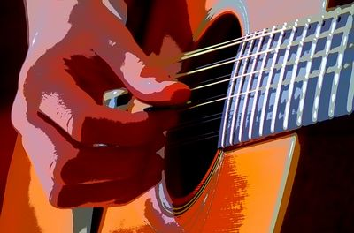

ГИТАРА ДЛЯ НАЧИНАЮЩИХ
ГИТАРА ДЛЯ НАЧИНАЮЩИХ Простые пьесы для акустической гитары
Все пьесы предыдущих разделов, за исключением, может быть, раздела "Блюз и кантри", на мой взгляд, можно отнести к простому фингерпикингу (fingerpicking, примерный перевод - перебор). Они включают в себя мелодию, простую басовую линию, простые аккорды и переборы (арпеджио).
Хотя строгой границы между фингерпикингом и фингерстайлом не существует, я бы отнес пьесы в данном разделе к фингерстайлу (fingerstyle), который обычно переводят буквально, как "пальцевый стиль". Я бы перевел его как "стильный перебор" или "стильный фингерпикинг". Помимо мелодии, эти пьесы включают в себя более сложную басовую линию, более сложные аккорды и переборы, а также различные "украшения" - легато, хаммероны, перкуссии, и т.п. По-моему, они также гораздо ближе к законченным произведениям - у них есть начало, развитие или вариации, и конец - и они обычно сложнее.
Хотя строгой границы между фингерпикингом и фингерстайлом не существует, я бы отнес пьесы в данном разделе к фингерстайлу (fingerstyle), который обычно переводят буквально, как "пальцевый стиль". Я бы перевел его как "стильный перебор" или "стильный фингерпикинг". Помимо мелодии, эти пьесы включают в себя более сложную басовую линию, более сложные аккорды и переборы, а также различные "украшения" - легато, хаммероны, перкуссии, и т.п. По-моему, они также гораздо ближе к законченным произведениям - у них есть начало, развитие или вариации, и конец - и они обычно сложнее.

Фингерстайл
 Бен Кинг - Stand by me (A) (Таб)
Бен Кинг - Stand by me (A) (Таб) Бетти Мидлер - The rose (C) (Таб)
Бетти Мидлер - The rose (C) (Таб) Билл Уизерс - Ain't no sunshine when you're gone (Am) (Таб)
Билли Джоэл - Honesty (C) (Таб)
Битлз - Here comes the sun (D)
Битлз - Let it be (C) (Таб)
Битлз - With a little help from my friends (C)
Боб Дилан - Knocking on heaven's door (D) (Таб)
Боб Дилан - Mighty quinn (A) (Таб)
Дип Перпл - Smoke on the water (Em) (Таб)
Иглз - Hotel California (Am) (Таб)
Леонард Коэн - Hallelujah (G) (Таб)
Пол Саймон - Bridge over troubled water (G) (Таб)
Прокл Харум - A whiter shade of pale (G) (Таб)
Ричард Маркс - Now and forever (G) (Таб)
Ричард Маркс - Right here waiting for you (C)
Род Стюарт - Sailing (C) (Таб)
Стинг - Every breath you take (G) (Таб)
Экстрим - More than words (C) (Таб)
Элвис Пресли - Unchained melody (E)
Эрик Клэптон - Tears in heaven (A) (Таб)
Эрик Клэптон - Tears in heaven (вар. II) (C) (Таб)
Эрик Клэптон - Wonderful tonight (G) (Таб)
Билл Уизерс - Ain't no sunshine when you're gone (Am) (Таб)
Билли Джоэл - Honesty (C) (Таб)
Битлз - Here comes the sun (D)
Битлз - Let it be (C) (Таб)
Битлз - With a little help from my friends (C)
Боб Дилан - Knocking on heaven's door (D) (Таб)
Боб Дилан - Mighty quinn (A) (Таб)
Дип Перпл - Smoke on the water (Em) (Таб)
Иглз - Hotel California (Am) (Таб)
Леонард Коэн - Hallelujah (G) (Таб)
Пол Саймон - Bridge over troubled water (G) (Таб)
Прокл Харум - A whiter shade of pale (G) (Таб)
Ричард Маркс - Now and forever (G) (Таб)
Ричард Маркс - Right here waiting for you (C)
Род Стюарт - Sailing (C) (Таб)
Стинг - Every breath you take (G) (Таб)
Экстрим - More than words (C) (Таб)
Элвис Пресли - Unchained melody (E)
Эрик Клэптон - Tears in heaven (A) (Таб)
Эрик Клэптон - Tears in heaven (вар. II) (C) (Таб)
Эрик Клэптон - Wonderful tonight (G) (Таб) Пьесы, этюды
Гитара для начинающих, 2021